Improving the lives of indigenous communities
The Wayuu Taya Foundation works to improve the living quality of indigenous communities in Latin America, maintaining and respecting their traditions, culture and beliefs.
Empowering communities through sustainable change
The Wayuu Taya Foundation was created with the objective of improving the living conditions of the indigenous communities in Latin America, maintaining and respecting their traditions, cultures and beliefs.
Learn More


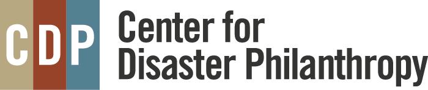
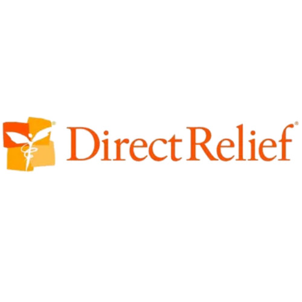
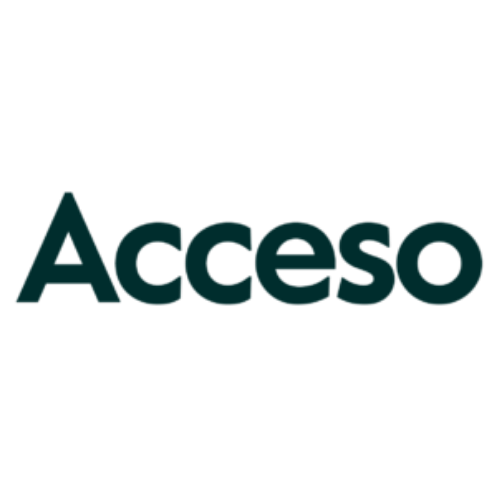
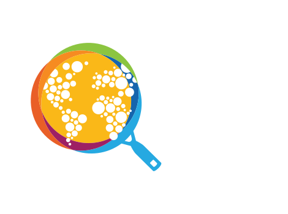
Empowering Communities
From emergency relief to sustainable agriculture, our programs create lasting change across Venezuela's most vulnerable communities.
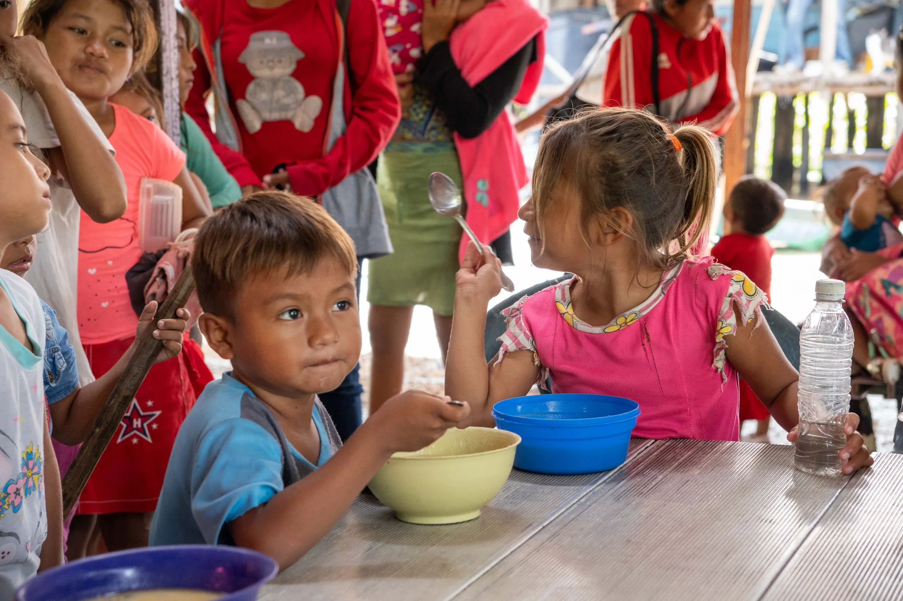
Help for Those in Need
Emergency food, water, medical supplies, and shelter for families in crisis.
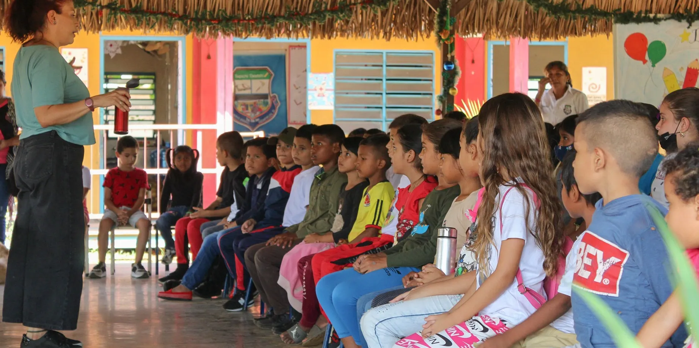
Education
Building schools and training teachers while preserving cultural identity.
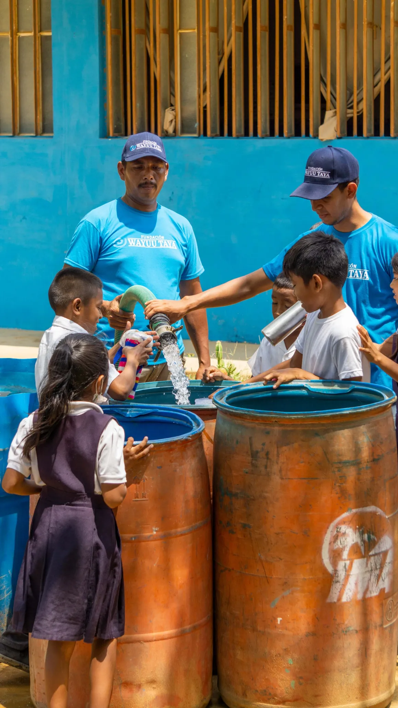
Water for All
Clean, safe drinking water through sustainable water solutions.
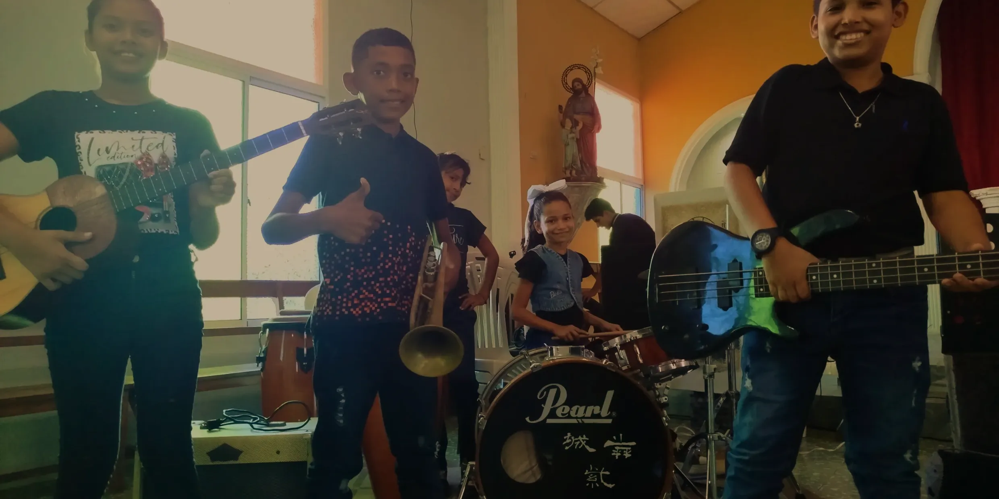
Music
Orchestral training, ancestral music preservation, and cultural exchange.
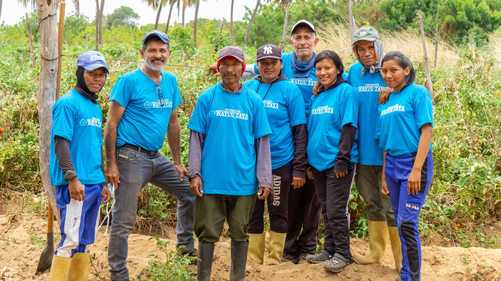
Agroecology
Sustainable farming, seed preservation, and food sovereignty.
Making a Difference in the Community
Your contribution fuels our diverse range of programs at the Wayuu Taya Foundation, touching lives and fostering sustainable development across communities.
Empower Wayuu women in La Guajira with education, training, and sustainable income through your support.
The Wayuu Taya Foundation was created with the objective of improving the living quality of the indigenous communities in Latin America, maintaining and respecting their traditions, cultures and beliefs.
Your donation provides much-needed water, offering relief and hope to indigenous communities facing water scarcity
Your donation helps bring the power of music to indigenous communities, enriching their cultural heritage and fostering connections through melody and rhythm
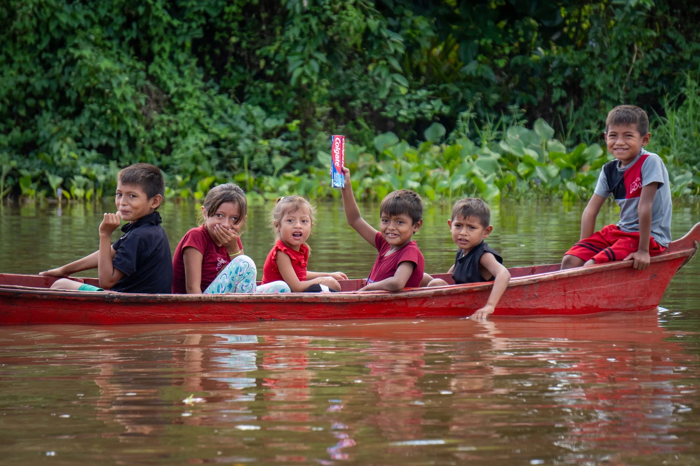
Your Gift Changes Lives
Every dollar you give goes directly to the communities who need it most — providing food, clean water, education, and hope to families across Venezuela.
Donate Now ⟶Latest Stories
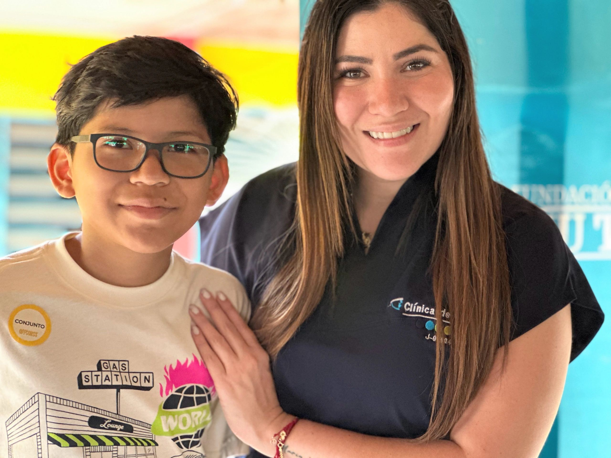
Wayuu Taya Foundation Delivers 119 Glasses to Children
October 27, 2025
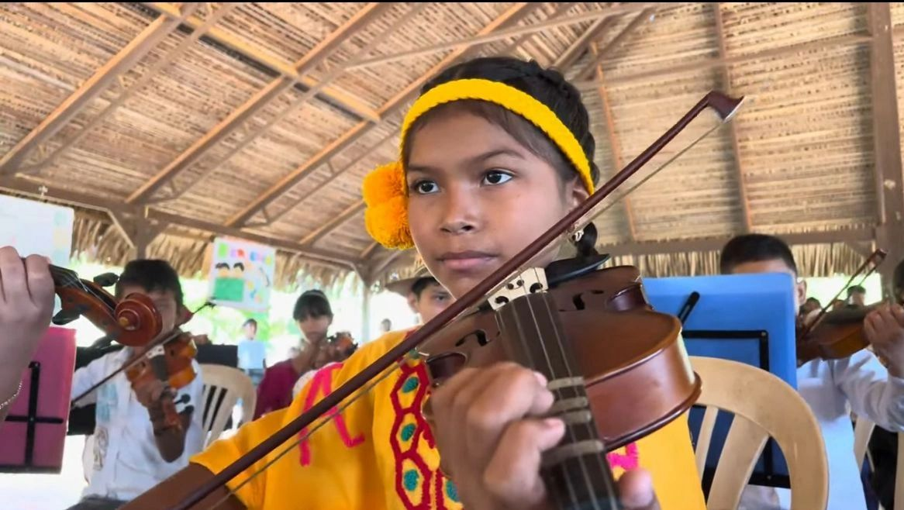
Music, Learning & Hope Return to Núcleo Fundación Wayuu Taya!
September 19, 2025
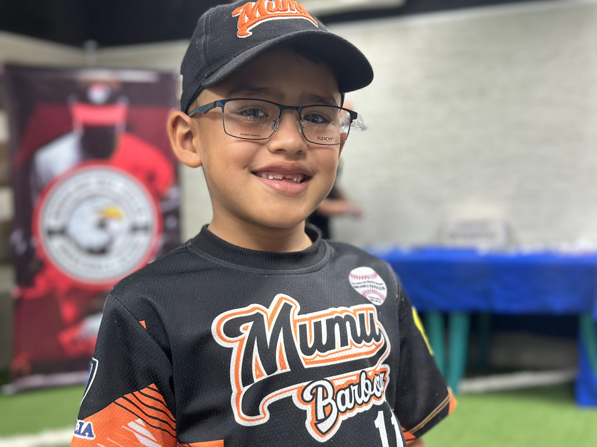
Bringing Visual Health to Youth Baseball Schools in Maracaibo
September 7, 2025
@wayuutaya
Stay connected with our latest stories, events, and impact across communities.
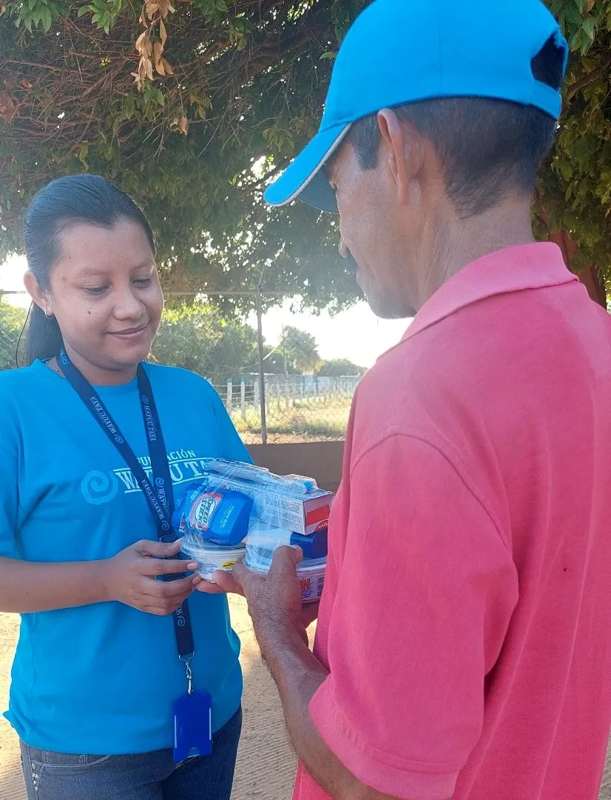
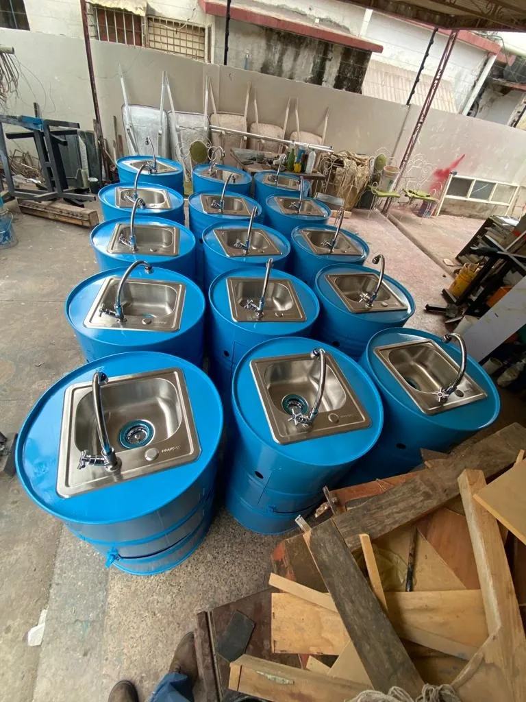
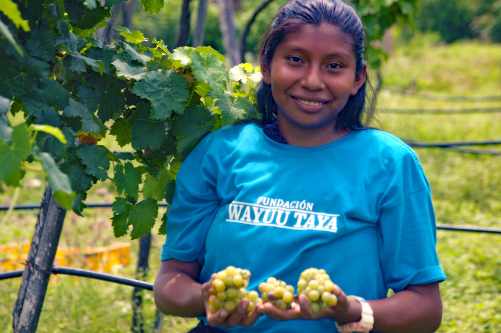
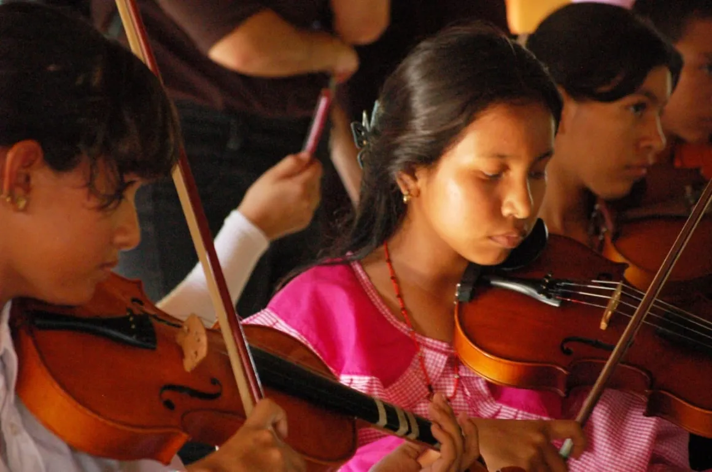
Where We Work
The Wayuu Taya Foundation began its work in the La Guajira region along the border between Venezuela and Colombia, and has since expanded to reach communities across all of Venezuela.
Together we can make a difference
Your contribution fuels our diverse range of programs, touching lives and building sustainable development across communities.